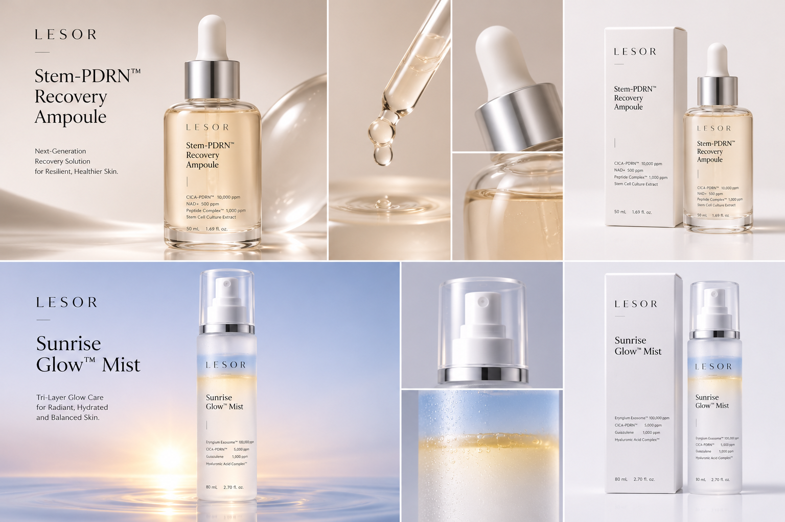
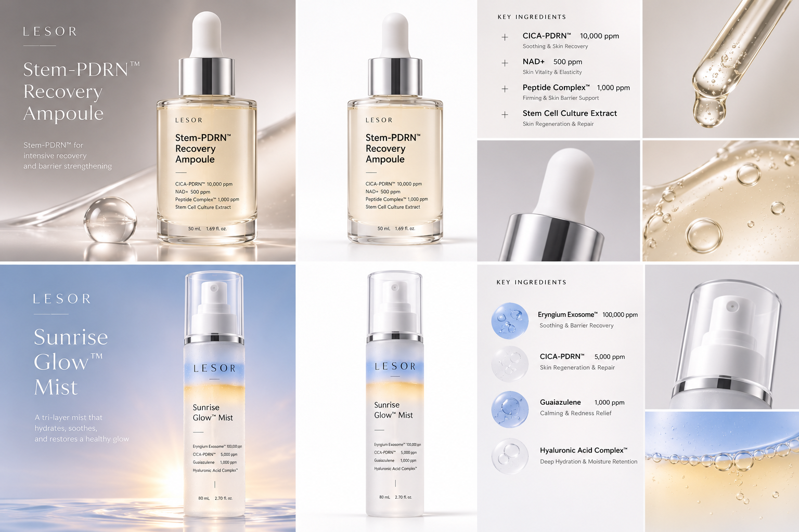
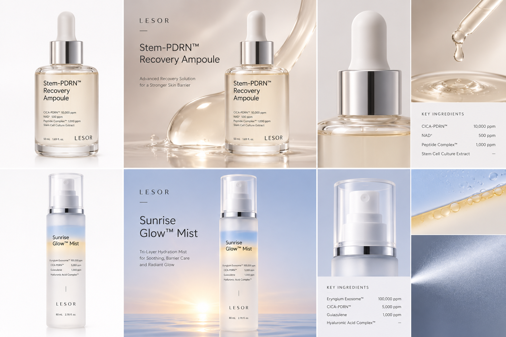

01
Layered Hydration
워터와 오일 레이어가 전하는 촉촉한 사용감
 LESOR / TRI-LAYER RADIANCE MIST
LESOR / TRI-LAYER RADIANCE MIST해돋이의 빛에서 영감을 받은 트리 레이어 미스트. 블루 워터층과 샴페인 골드 오일층이 어우러져 피부에 수분감과 은은한 윤기를 더하는 데일리 케어.

좋은 피부 루틴은 복잡할 필요가 없습니다.
LESOR는 매일 손이 가는 사용감과 피부가 필요로 하는 균형을 고민합니다.
사용 전 분리된 워터와 오일 레이어가 가볍게 흔들었을 때 하나로 블렌딩됩니다. 아침 햇살의 블루와 골드에서 영감을 받은 감각적인 레이어링.

워터와 오일 레이어가 전하는 촉촉한 사용감
건조하고 예민해진 피부를 위한 데일리 케어
번들거림 대신 은은하게 빛나는 피부 표현
피부 컨디션 케어를 위한 원료 콘셉트
진정 및 피부 컨디션 회복 케어
편안한 피부 컨디션을 위한 블루 성분
수분 공급과 보습 케어
두 레이어가 충분히 섞이도록 사용 전 가볍게 흔들어 주세요.
눈을 감고 얼굴에서 적당한 거리를 두어 고르게 분사합니다.
손바닥으로 가볍게 눌러 흡수시켜 주세요.


